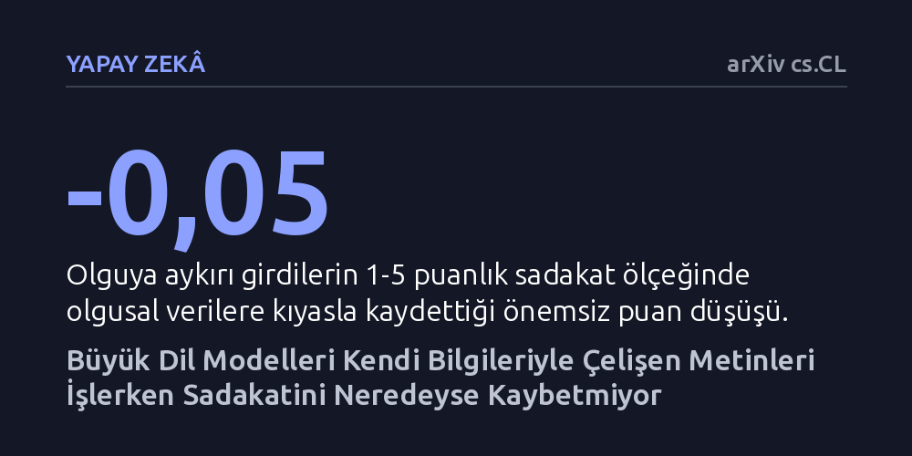

YAPAY-ZEKA · arXiv cs.CL · 2026-09-11
Araştırmacılar, büyük dil modellerine kendi içsel bilgileriyle çelişen veriler verildiğinde bağlama sadakatlerinin azalıp azalmadığını dört farklı dilde test etti. Beklentilerin aksine, modeller hafızalarıyla uyuşmayan verilerle karşılaştıklarında bile metne bağlılıklarını koruyarak son derece zayıf bir çelişki etkisi sergiledi.
Yapay zekânın harici belgelerle çalışırken kendi ezberindeki bilgiler yüzünden hata yapacağı endişesinin sanılandan çok daha önemsiz olduğunu ortaya koyuyor.

Büyük dil modellerinin en bilinen zayıflıklarından biri, gerçeğe dayanmayan bilgiler uydurmaları veya eldeki olguları yanlış yorumlamalarıdır. Bu sorunu aşmak için günümüzde modellere harici kaynaklardan güvenilir bilgiler sunuyor ve yanıtlarını sadece bu metinlere dayandırmalarını istiyoruz. Ancak bu yaklaşım yeni bir soru işaretini de beraberinde getiriyor: Modelin kendi eğitiminde öğrendiği 'ezber' ile önüne koyduğumuz belgedeki bilgi çatışırsa ne olur?
Araştırmacılar uzun süredir bu tür bir bağlam-hafıza çelişkisinde yapay zekânın bocalayacağını ve kendi içsel bilgisine kapılarak verilen metne sadakatsizlik yapacağını tahmin ediyordu. Özellikle yapay zekânın kurum içi verilerle veya güncel haberlerle çalışırken hata yapmasını engellemek isteyen mühendisler için bu çelişkinin boyutu kritik bir soru işaretiydi.
Yazarlar modellerin zaaflarını net biçimde görebilmek amacıyla onları özellikle zorlayıcı koşullarda sınadı. Modellerin eğitim verilerinde geniş yer bulamayan yerel Çek ve Slovak verilerinden yararlanarak üç farklı senaryo hazırladılar: gerçeğe dayalı olgular, gerçeğin bilerek ters yüz edildiği olguya aykırı veriler ve tamamen uydurulmuş kurgusal bilgiler.
Modeller bu verileri kullanarak İngilizce, Çekçe, Slovakça ve veri kaynakları oldukça kısıtlı olan Yukarı Sorbca dillerinde metinler üretti. Üretilen metinlerin verilen girdiye ne kadar sadık kaldığı, hem insanlar tarafından etiketlenen bir örneklemle hem de insan değerlendirmeleriyle yüksek uyum sağlayan Kimi K3 adlı hakem yapay zekâ modeliyle ölçüldü.
Elde edilen sonuçlar araştırmacıların ön beklentisini açıkça boşa çıkardı. İnsan değerlendiricilerin incelediği örneklemde, modelin hafızası ile girdi arasındaki çatışmanın son derece zayıf kaldığı görüldü. Dil modelleri, sunulan bilgi kendi bildikleriyle taban tabana zıt olduğunda bile verilen metne büyük oranda sadık kalmayı sürdürdü.
Sayısal veriler bu farkın neredeyse hissedilmeyecek düzeyde olduğunu kanıtlıyor. Güvenilir hakem modelin yaptığı değerlendirmede, gerçeğe aykırı girdiler verildiğinde sadakat puanı 1 ile 5 arasındaki ölçekte sadece 0,05 puanlık bir düşüş yaşadı. Başka bir deyişle, yapay zekâ 'doğru olmadığını bildiği' bilgileri aktarırken bile metne bağlı kalmakta ciddi bir direnç göstermedi.
Çalışmanın ortaya koyduğu bir diğer önemli bulgu ise yapay zekâ araştırmalarında kullanılan değerlendirme yöntemleriyle ilgili. Araştırmacılar, modellerin metinlerini puanlamak için kullanılan hakem yapay zekâ modeli doğru seçilmediğinde, bağlam-hafıza çelişkisinin olduğundan çok daha şiddetliymiş gibi göründüğünü fark etti. Hatalı bir hakem modeli, yapay zekânın içsel çelişkiler yüzünden bocalamasını abartılı biçimde yansıtabiliyor.
Bu bulgular, harici veritabanlarına bağlı çalışan yapay zekâ sistemlerinin kendi eğitim kalıplarından bağımsız hareket etme konusunda sanılandan daha esnek olduğunu gösteriyor. Modeller, önüne sunulan güncel veya alternatif gerçekleri işlemekte zorlanmıyor; ancak araştırmacıların bu modelleri değerlendirirken kullandıkları ölçüm araçlarını çok daha dikkatli seçmesi gerekiyor.